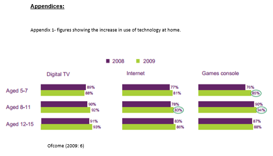
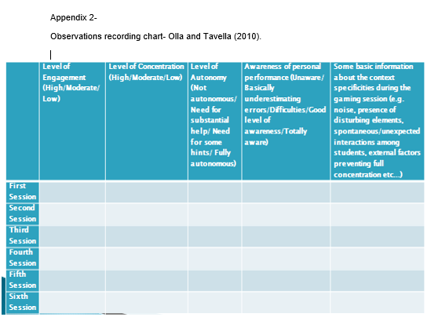
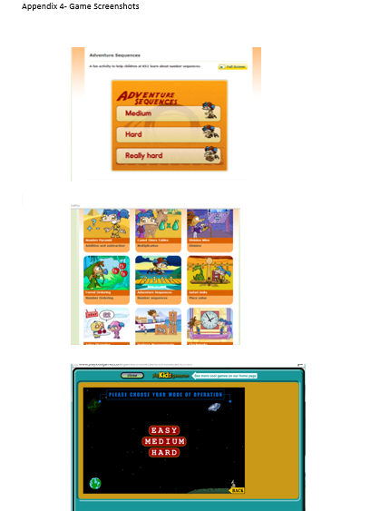
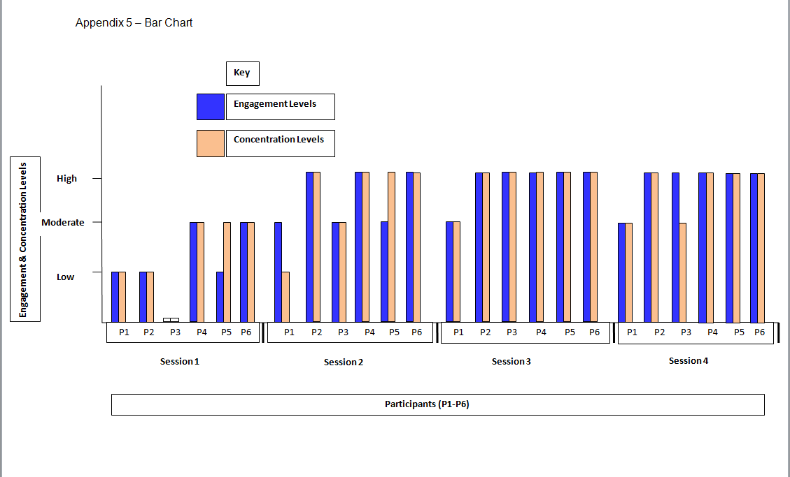

Search the Case Studies
Search the Articles
Search the Membership
Search MirandaNet
MirandaNet Fellowship Casestudy
Membership List | Publications | Research | Specialist Area List | Braided Learning Ejournal
Engaging young learners through Digital Game Based learning.
Rajvir Cheema
Year of posting: 2014
Abstract:
The last decade has seen an increased interest in Digital Game Based Learning (DGBL), which has been suggested as an effective way to engage and motivate young learners. In this research, DGBL was introduced to learners in year 1 in order to increase engagement and motivation levels. It was conducted in a state Primary school located within the East Midlands region. With researches and studies defining today’s learners as a ‘net generation’ and ‘twist-speed generation’. Digital games have become an area of interest that can be used to address the engagement levels of learners today. Methodology included participant observation and focus groups with 6 children, conducting 4 game sessions. This is a small scale study carried out within a short time frame. The findings supported the results of previous research that DGBL is an effective tool to increase learners’ engagement and motivation levels. The research found most learners had an interest in DGBL and showed high levels of engagement in most sessions. They also show that DGBL can develop a range of skills which include peer learning, communication, teamwork and problem solving. Findings also revealed elements of competition, control over learning and learner autonomy as additional themes. The findings suggest for further larger scale research into different elements of DGBL. The research recommends the use of DGBL more often in the Year 1 classroom as children enjoy this form of learning concept, if developed and planned effectively within curriculum contents.
Keywords:
digital game based learning, enagagment, motivation
Study
Context and Background:
With the rise of technology inventions and its use within education, Digital Game Based Learning (DGBL) has become an engaging tool to motivate learners in primary and secondary classrooms. ‘Digital Game-Based Learning is precisely about fun and engagement, and the coming together of serious learning and interactive entertainment into a newly emerging and highly exciting medium- Digital Learning Games’ (Prensky, 2001:5). DGBL can be used as a form of ‘learning through the game’ that can be developed into a digital educational game to be used within classrooms, allowing learners to use technology to study different topics through the use of digital games (Wu et al, 2012:269). The last decade has seen an increase of DGBL and some argue this to be the new exciting way of learning for today’s ‘net generation’ as it is engaging and motivating (Bryon Review 2008; Egenfeldt-Neilsen 2007; Van Erk 2006; Prensky 2001). This research aims to use digital games in order to engage learners within areas of Mathematics. Research on DGBL shows that this form of learning is effective in engaging young learners in almost every topic (Egenfeldt-Neilsen 2007; Facer 2003). A range of games can be used such as computer based games, educational gaming software and online games.
The school currently has 1 computer room which is used by the whole school (439 pupils. DGBL was chosen as a form of technology enhanced practice in order to increase the use of digital games within the Year 1 classroom. Having worked within the classroom, it was observed that some learners were not engaged during lesson input and were often distracted during whole class learning. During which the teacher would use interactive word documents or a simple whiteboard to explain the topics. Facer (2003: 2) states that DGBL ‘...motivates young people in a way that formal education doesn’t’. Therefore using digital games to engage learners could be an effective approach if introduced within the Year 1 class. The Year 1 currently uses no set of form digital games or programmes to enhance learning.
This research aims to use digital games in order to increase young learner’s engagement within some areas of Mathematics that they are currently learning. With the use of computer online games, the research will look into the influence these have upon the learner’s engagement levels in lessons and observe their behaviour during the games session. The research aims to look into three aspects:
-
Can game based learning motivate young children in my setting?
-
Measuring engagement levels when playing the game through behaviour and participation
-
Do children show more interest in a topic when using DGBL compared to verbal input in the classroom?
Literature Review:
Over the last decade, research and gaming programmes for educational purposes have seen an increase in different areas of learning. Along with schools and children, work places have also adopted this approach with adults for training purpose. Children’s interest in technology overall has risen in the past decade, with one early example of the ‘hole in the wall’ project by Mitra (2001) - (see appendix 1 for increase in technology overall in 2009). The project set up computers in walls in India for children, with no guidance or instructions on how to use them. The project found that without any tuition, within hours children were drawing, playing games, and downloading content from the internet. Mitra (2001) found children to be ‘highly motivated...and picked up skills and tasks by constructing their own learning environment’. Mitra concluded that with ‘entertaining and motivating content’ children develop an interest in learning, especially with the use of computers. With many studies carried out on the impact of DGBL, results have mostly been positive and encouraging. Motivation and engagement are considered the key purposes for using DGBL in classrooms, which is found in all DGBL researches (see Douch et al 2010; Sandford et al 2006; Prensky 2001).
Ghergulescu & Muntean (2010) define motivation in a learning context as the attempt to ‘accomplish goal of knowledge and to maintain participation in the learning process’ (2010:72). Bandura’s theory of ‘self-efficacy’ can be applied here in which self-efficacy influences the level of commitment within the task and the amount of effort a person exerts (Bandura, 1994). A similar commitment and motivation is required from children that shows their effort towards their learning. Therefore DGBL can be used as a way to accomplish motivation towards learning. With motivation evolving as the key reason, games can enhance the level of ‘self-efficacy’ within children to enables them to not only engage further, but also make more effort with their learning (Younie and Leask, 2013).
There is a general agreement, and evidence to support this, to show an increase in motivation and engagement using DGBL (Perrota et al 2013; Johnson et al, 2011). Chen et al (2012:317) found in a study of 53 students that digital games showed positive outcomes and ‘provide promising possibilities to motivate and engage students in subject learning’. The study also found that students favoured this approach and it also encouraged active participation. Struppert (2010:365) further supports this stating that ‘electronic games have the potential to captivate less motivated and interested learners’. In a large scale study by ‘Future Lab’, Sandford et al (2006:2) found that ‘teachers and students reported that using games in lessons was motivating’. In addition to motivation and engagement, studies have also found other skills that are developed via the use of DGBL. Kirkland et al (2010:13) while conducting workshops with teachers and students found that ‘games were seen to be a strong vehicle to develop social and collaborative skills’. Digital games support a range of skills such as teamwork, communication, learning of rules, reflection and problem-solving (Douch et al, 2010).
But why digital games?
Building from the idea that DGBL promotes a range of skills, there is also an argument that learners today require technology-enhanced approaches (Egenfeldt-Neilsen 2007; Van Erk 2006). Van Erk (2006:17) states the ‘net generation’ and ‘twitch-speed generation’ (Egenfeldt-Neilson, 2007), who have become disengage learners ‘...require multiple streams of information, want quick interactions with content’ which are ‘characteristics matched well with DGBL’. Prensky (2001) highlighted this earlier in his work, referring to the positive outcomes of DGBL. He states that learning should be exciting and ‘invent new ways of learning’ that can engage today’s ‘new world, style and capabilities’ (Prensky, 2001:8). There is also some supporting evidence to suggest that today’s ‘net generation’ can benefit from digital games. Sandford et al (2006:2) found from a sample of 2,334 students that 82% of students played games outside the lesson regularly and ‘89% think it would make lessons more interesting’.
However, despite a rise in digital games and technology use, the figures mismatched with teachers. Sandford et al (2006:2) found 72% of teachers did not play any games, showing the ‘net generation’ gap stated by Van Erk (2006). Williamson (2009) found similar results in a study of 1,634 teachers in the UK. The study found that 42% of teachers never play computer games, but 60% would consider using them in their future teaching. The ‘fact that over 40% never play games at all is likely to be a contributing factor to the lack of knowledge and skills in gaming often cited as a key reason for teachers not to use games in schools (Williamson, 2009:23). A study in Scotland by Groff et al (2010:80) found that some teachers felt unsure on which games to use and how, they wanted to establish clear aims of how the games can enhance children’s learning beforehand, as they did not want to risk children learning experience. With learners/students now using more technology and devices outside of school, it can be argued that those learners require some form of digital learning which matches their life and learning styles.
Nonetheless, it is not only the mismatch of students and teachers use of games, but also other factors that need to be considered prior to introducing DGBL to students. Tsai et al (2012) found in a small scale study that, although games improved motivation, some students become distracted by the game contents and avoided reading the learning content. The study claims that this can be the ‘expected reason why some students could not acquire knowledge through playing’ (Tsai et al, 2012:248). It has been stated by some that DGBL is not an easier approach to teach and should be implemented with other teaching styles. This is because not all learners are keen on games (Tsai et al 2012; Struppert 2010; Facer 2003). Facer (2003:1) argues that not all children are ‘new net generation’ and it should not be assumed that all children will find DGBL engaging. It is not a ‘one size fits all’ and children have a diversity of learning styles which should not be ignored. Sandford et al (2006) suggested that factors such as ‘facilities, planning and the specific need of individual teachers’, are contributing factors to how games are implemented and used in classrooms. A number of studies have recommended teacher training in order to develop the teacher’s understanding of game based learning, and how they can effectively support learning using other traditional learning styles along with DGBL (Groff et al 2010; Struppert 2010; Freitas 2007).
There are challenges to implementing DGBL and it requires a number of factors to be considered. ‘DGBL should be used as a tool that supports a traditional class’ Tsai et al (2012:249; Struppert 2010). DGBL is a learning approach which provides a range of skills which learners of the ‘net generation’ can relate to. Although it may not be appropriate for all learners, it is a learning style which can be effectively implemented along with traditional teaching styles. It is learning style which offers active participation that can be tailored to a range of learners through the use of game difficulty levels (easy, medium, difficult) (Douch et al, 2010). It is also considered ‘non-threatening’ in which children can learn within a protected environment (Kirkland et al, 2010), providing them with an ‘instant interactive learning environment’ (Edenfeldt-Neilson, 2007).
Methodology:
This research aims to use DGBL in order to increase the engagement levels of young learners and introduce learning to them in the form of games. Being the researcher as well as the classroom support assistant, participant observations and focus groups were chosen as research methods. This research will work within an interpretive paradigm, using qualitative methods as it allows a ‘realistic perspective’ on the topic (Sherman & Webb, 2001). Denzin & Lincoln (1994:2) describe qualitative research as a ‘multi-method in focus involving an interpretive, naturalistic approach to its subject’ that interprets and observes the topic and the ‘meaning people bring to them’. Some characteristics of qualitative research include ‘natural settings, participant observations, researcher as data gathering instrument and flexible designs’ (Hatch, 2010; Anderson 1998:119). These characteristics match with this research as data is collected in a natural setting (classroom) by the researcher who is a participant observer. A ‘...qualitative research paradigm is that of a profound understanding which is gained through conversation and observation in a natural setting rather than through experimental’ (Anderson, 1998:119; Denzin & Lincoln 1994). As the research was being conducted with children, it was appropriate to collect data via observations and small discussions through focus groups.
Research setting: The school is located within the East midlands region and is a state community primary school, rated ‘Good’ in 2013 by OFSTED. The selected group was a Year 1 class with whom the researcher has been working with since September 2013.
Sample: This research is a small scale study conducted within a short time frame. Four game sessions were conducted with six children. The sample was based on ‘selection criteria’ which aimed to select learners who were observed to be distracted easily during class input and showed low levels of engagement (Merriam, 1998). These learners were selected by the class teacher and the researcher.
Data collection: The data from participant observation was collected through an observation sheet (see appendix 2). The focus groups were informal short conversations for feedback purposes (see appendix 3 for questions asked in focus groups). The data collection was a mixed model approach with elements of qualitative and quantitative data for analysing findings. Due to time limitations, it was not possible to collect in depth observation records for four game sessions on each learner. Therefore an observation chart was selected to record different aspects of the topic, (see appendix 2) producing quantitative data, recording occurrence of behaviours (Arghode, 2012). The chart was adapted from Otta and Tavella (2010) who developed this to record children’s level of motivation and engagement during game based learning.
Participant Observation:
Participant observation is a process which allows the researcher to learn about the activities in a natural setting through observing and participating (Jorgensen, 1989). As Whiting states ‘an observer is under the bed. A participant observer is in it’ (cited in Guest et al, 2012:78). It was important to conduct the game session within a classroom as children would feel most comfortable in their own learning environment and not feel as if a research or ‘special’ activity was being carried out. This method allows a ‘firsthand involvement’ and the researcher can describe exactly ‘what goes on, who or what is involved, how they occur’ (Marshall & Rossman 1999:106; Jorgensen 1989). Participant observation comes from ethnography, however taking an ethnographic approach was not possible due to time. Motivation and engagement cannot be expressed in words; therefore choosing participant observation allows the research to observe this (Kawuilich, 2005).
The limitations to this method have been considered and acknowledged. During participant observations, there is a risk that the researcher may only record the data required for their study/topic, avoiding other aspects or behaviours which may occur (Johnson and Sackett. 1998). However, this has been addressed through the observation sheet, in which other aspects of DGBL have been included such as ‘distractions, level of autonomy, social interactions’ etc (appendix 2). Another limitation to this method is participation in observations, which make the findings unique to the individual collecting data (Guest et al, 2012). Therefore the data collected can be different if collected by another researcher. LeCompte et al (1999) further suggests that different researchers will have different interpretations and observer skills. The quality of data will depend on the information collected which is a reflection of the researchers’ ability to understand the situation. This is a limitation as I am not a trained observer. However, this has been addressed via the use of field notes to ensure key data is not missed. Field notes will minimise these limitations as ‘jotting’ down ideas and information after observations will help add details to data (Bernard, 2006:389).
Focus Groups:
The focus group was kept short (5 minutes) in order to get feedback on which games participants enjoyed, game they would like to continue, etc. One of the key factors for choosing focus groups was its assistance of producing the same amount of data as a one-to-one interview would generate but within a shorter time scale (Cohen et al, 2000). The reason for conducting the focus groups was so that children could provide some ongoing feedback, and also have a say in which games they enjoy. This gives children some choice and say to help give the researcher a ‘better understanding of how people feel or think about an issue’ (Krueger & Casey, 2000:4).
However, it was important to keep the questions appropriate at a children’s level of understanding and that they can answer (Patton, 2002) (see appendix 3). Being in the same class, the children knew each other, causing a risk of ‘shift opinions’. It is known that in focus groups ‘opinions of individuals might shift’ depending on the answers of other participants (Kruger, 1994). Therefore each child was asked to express their likings, allowing everyone the opportunity to speak.
Triangulation: A triangulation of data collection was selected in order to add validity and relativity to data by using ‘across methods’. This is a combination of qualitative and quantitative data (Denzin, 2005). Using triangulation can cover the weaknesses of one method which may not be possible by single methods, such as using field notes to minimise limitations of participant observations (Jick, 1979).
Type of game: The research used online games from education websites such as BBC Bite size. The games selected were generally ‘easy, medium, difficult’ levels in order to meet the learning levels of all participants (see appendix 4 for game screenshots). As Bandura suggests, ‘...a person must believe that he/she is capable of solving and pursing the task’ (1994:72), therefore the levels of game difficult was considered when selecting games.
Ethical considerations: This research followed BERA guidelines, ensuring protection of data and confidentiality. Anonymity was kept throughout using codes for children and supervision by a qualified teacher during game sessions.
Limitations- Being a small scale study, this research could only focus on selected aspects of DGBL which does not take into account the views/experiences of parents and teachers. The findings cannot be generalised to a range of learners due to its small sample. The time scale of this study restricts this and also, due to ethical delays and time frame, only 4 game sessions were carried out (originally planned 6). Another limitation to this study is the type of game that can be used. Facer (2003) suggests using games designed for educational purposes and characteristics of motivation in order to measure it. However, this was not possible as these games require particular software which is bought and requires a license by the school. Therefore, only simple online games could be used due to facilities and access.
Findings:
Four sessions were conducted with six learners (P1-P6). The 1st session was conducted using an interactive whiteboard because the computer room was not available at the time. The other 3 session were in the computer room and each participant has access to an individual computer. The data for each learner was collected on observation sheets, followed by short informal focus groups. The findings from the observations were developed into a bar chart to view engagement and concentration levels as these two aspects were recorded in ‘low, moderate, high’ levels (see appendix 5).
Participant observations:
The participant observations showed an interest from children for all the sessions. Engagement was developed and observed throughout the sessions, which increased from session 2 for 4 learners. However, P1 and P3 had slightly different results compared to others. P1 improved slightly towards the 3rd and 4th game session. Whereas P3 showed a mix of concentration levels that was recorded as him attempting ‘hard’ level questions (appendix 5 for engagement and concentration levels). Other aspects that were recorded through the observation sheet included: levels of support required, awareness of personal performance and any additional factors being observed.
It was found that some children required support, especially when they attempted more difficult level games (P3 and P5). Most children required some level of support during the sessions, which required me as assistant, to work with them one-to-one. However, towards the 4th session, most children did not require support and were in full control of the games they chose and were attempting to work out the answers. The level of support was dependent on how well aware children were of their own personal performance. For example, P2 was aware of which topics he has covered in lessons; therefore choose the games he could work out the answers for. Being aware of his performance on game levels, he did not require support or guidance from me.
P1 was observed throughout to be distracting and interrupted the sessions. He found it difficult to concentrate on the one game, and would keep changing games often. He was not aware of his performance, therefore choose any level of difficulty for the game, whether it was ‘hard or easy’. He showed some awareness after encouraging him to attempt ‘easy’ level games first. He was observed to be choosing ‘easy’ level games for the 3rd and 4th sessions. Most distraction and noise levels were recorded in the 1st session, which was conducted using interactive whiteboards. Children also got more distracted from each other whereas some were quiet during the session.
There were also other skills which were recorded such as social interaction, peer learning and working with each other, and communication. Additional to these, other factors were observed which were not included in the research. Such as, competition between P3 and P4 who competed against each other on some games. P2 and P6 showed social interaction the most and also played some games together as they both found the ‘monster’ themed game interesting. Also, elements of praise were evident in session 3 and 4 as children showed their answers which they to me more often. Children were encouraged throughout and seemed pleasant with the praise given to them.
Field Notes:
The field notes helped record some data in details such as engagement and other elements of DGBL which were not being looked into. Control, competition, failure, social interaction, control over own learning, praise, topic and theme of games, were factors which had some influence on children’s engagement and motivation levels.
Due to facility reasons, the first session was carried out using the Interactive whiteboard which the children chose in turns. Children who showed high levels of engagement in other sessions (P2, P4 &P6), were quiet and seemed disengaged. They found some questions difficult but showed some interest during their own turns.
Focus Groups:
From the first session to the last, all children showed good levels of motivation and an enthusiasm towards the activities. The focus groups revealed this, as all the children wanted to carry on with the sessions and participate in all of them. The focus groups helped engage learners further in game sessions by giving them the opportunity to express their interests, and have some autonomy in what will happen in the following game sessions. All children said to have enjoyed the sessions, and would like to continue to use them. This was expressed by P3 by a card to me for doing the game sessions and allowing them extra time. The children used to end of game sessions to discussion and express their likes of games, and expressed an interest in wanting rewards. These comments were considered and as part of a reward, children were allowed to play other non-educational games after completing the Math games.
If you wish to read the originals data for this research project, please email me on rajvir6@hotmail.com
Analysis and Discussion:
The research aimed to increase children’s levels of engagement through the use DGBL. The research started with three objectives:
-
Can game based learning motivate young children in my setting?
-
Measuring engagement levels when playing the game through behaviour and participation
-
Do children show more interest in a topic when using DGBL compared to verbal input in the classroom?
The data found an evident motivation within learners using DGBL in my research setting. This was an expected outcome as most literature revealed an increase of motivation and active participation when using DGBL (Chen et al 2012; Struppert 2010). The engagement levels were also seen to have increased from session 2 with most children showing high levels of engagement and concentration (see bar chart, appendix 5). All learners had some sort of gaming device at home, which shows their interest in games overall. The motivation and engagement from learners can be seen as result of meeting today’s generation of learners’ needs. Whom of which are experiencing ‘quick interactions with content’ and require new ways of learning (Egenfeild-Neilson 2007; Prensky 2001). When children are introduced to a different learning approach that they do not experience often, the engagement, and motivation to participate levels increase. Hromek and Roffey (2009:16) state that ‘games are fun to children and young people and therefore highly motivating’. Motivation and engagement increases amongst children when they are ‘playing games and having fun’ (Younie and Leask, 2013). With the concept of DGBL, children can have fun which creates a ‘relaxed state where the whole body is engaged in problem solving’ (Hromek & Roffey, 2009:5). This could also be cited as one of the reasons why DGBL motivated and engaged almost all learners, due to its fun learning element (Younie and Leask, 2013:68)
Overall, whether it was engagement, motivation or participation levels, using DGBL influenced these factors within all children. Sandford et al (2006) found similar results as ‘teachers and students reported using games in lesson motivating’. These contained similar findings to this research. It can be suggested that using DGBL is surely a form of learning style that has the ability to ‘captive less motivated and interested learners’ (Struppert, 2010:365). However, P6 showed the least improvement in engagement and concentration levels. Although, this could be because P6 is on the ‘behaviour chart support’ system, but it could also be his learning styles. As Tsai et al (2012) suggested, DGBL is a tool to be used with traditional teaching styles, whereas the game sessions did not offer this due to research time restrictions. P6 requires an individual learning approach in which he is fully interested as well as aided with one-to-one support. DGBL did show some positive impact upon on him as he displayed ‘moderate’ engagement and concentration levels in the third session. This was because he discovered more games which were related to science and involved baking and learning about sound. This can further be developed into another theme which emerged from the data; theme and design of games.
Children’s interest in particular games evolved from the design and theme of games. Douch et al (2010:28) explains ‘genre’ to be one the reasons why young people enjoy computer games. Learners’ favourite games are those relating to the subject matters that ‘interested them in their own lives, such as sports, or characters that they could relate to’. This was observed with P2 and P6 who enjoyed a ‘monster’ themed game whereas P1 enjoyed ‘baking and high pitch sounds’. It can be seen from researches conducted by Tsai et al (2012) and Struppert (2010) who used theme based games, and the positive impact it has when game content and theme are considered and planned effectively. This was something this research lacked, as mentioned in limitations the use of simple games. If well designed games with purely educational concepts and themes were used, engagement and motivation could have been increased for P6 as there would more elements of gaming and features.
The session also saw social interaction being formed amongst some children. P2 and P6 found a ‘monster’ themed game that grabbed their interest which further developed into a peer interaction. P6 also supported other peers in loading game screens showing social, teamwork and communication skills. Kirkland et al (2010) found comparable results that showed students developing social and collaborative skills. Douch et al (2010) also states the development of a range of skills in DGBL such as social, collaborative, teamwork, reflection, and problem solving. These skills are developed when children are active and engaged in activities, creating a peer learning environment where they can talk and communicate. While during classroom input, children are mostly expected to listen or talk to peers next to them. However, when given the opportunity, children embedded these skills in the game sessions.
Whereas some children showed working collaboratively, others formed social interaction into a competitive factor. Competition can be a healthy form of motivation for some children, but can also be less motivating for others (Hromek and Roffey, 2009). However, for P3 and P4, competition was a motivating and enjoyable factor. Douch et al (2010: 34) found similar results suggesting the use of ‘competitive games can be an engaging and beneficial teaching and learning tool’. P3 and P4 showed high levels of engagement when competing to supports Douch’s et al results. Competition gives children a challenge to work towards and it requires them to concentrate on the task in order to win. Therefore resulting in higher levels of engagement and concentration.
During the first session, children showed an element of wanting control over the technology being used (Interactive whiteboard), and choosing their own games. ‘Player/control is an essential component of all games, players could play the games at their own pace’ (Wu et al, 2012:271). Frietas (2006) and Sandford et al (2006) suggest that player autonomy can be a significant motivator for learners. Stating that engagement is likely to arise when students have some degree of autonomy. This was found to be the case for 3 learners who displayed high levels of engagement. When they are given power and control over the learning content, ‘learners’ engagement and ownership promotes an enhanced learning experience’ (Younie and Leask, 2013:57). Autonomy and control are considered as motivating factors as children are given choice and ‘the individual is in control of his actions and completely absorbed in the task at hand’ (Perrotta, 2013:9). This gives them control within their learning environment and devices being used (Kirkland and Williamson, 2009). However, it should not be assumed that all children want individual control over their learning when using technology. As Tsai et al (2012) suggests that GBL should be implemented using other classroom teaching styles. This was the case for P3 and P5 who required one-to-one support on some topics. Children may like the idea of control over their learning devices, but support and guidance is still required to ensure they understand the content being delivered.
Above all, an essential part of gaming observed was the levels of success and praise a child achieved. Although the intended use for ‘easy, medium, hard’ difficulty levels was so all learners could play games at their ability levels, this also supported the level of success the learners achieved. In DGBL, ‘experiencing success promotes internalisation and therefore deep learning’ (Younie and Leask, 2013:57). Douch et al (2010) found a similar theme which suggests that increasing the difficulty of games can impose a challenge, leading to success which is shared with friends. In this research, children who started with the ‘easy’ level games and progressed to the ‘medium’ level, showing awareness of their learning, shared their success by showing me their computer screens. It is important that children experience success, even if it is after a few attempts as this creates digital games to be a purposeful experience in which they feel they can progress. This can also be linked back to Bandura (1994) who defined motivation as ‘accomplish goal of knowledge’ in order to maintain engagement and participation in an activity.
Overall, the data revealed a number of themes and results which were similar to the literature findings. Engagement and motivation was seen for most learners throughout, even with the use of simple games. Children also showed an interest and appreciation for letting them have an opportunity to do game sessions. There were other elements of DGBL which some literature highlighted and with the appropriate use of data collection, those additional themes were recorded and identified.
Conclusion and Recommendations:
This research achieved its intended aims with most of the learners. Almost all learners showed high levels of engagement towards the Mathematics topic with the use of DGBL. However, one child showed less improvement, this could be due to the limitations this research had. One limitation being the use of simple games, as software games designed with educational content provide more features which learners can engage with. With more sessions, planning and time this research can enhance a positive learning experience for all learners. The use of digital games itself develops a positive enthusiasm from learners, which can be developed further into an exciting form of learning style with other traditional classroom teaching styles (Tsat et al, 2012). For example, subject based games or topics that develop a range of skills, and learning and motivation factors through group work, competition and game success (see Strupppert 2010 ‘RealLives’ research).
This research showed the potential of DGBL towards increasing children’s engagement and concentration in learning. This was evident from the increased levels in the bar chart (appendix 5), an learners’ comments and feedback. However, due to small scale, this research could not address all aspects of DGBL; therefore further research is needed to look deeper into the themes which emerged from the data. The time scale allowed only a limited number of game sessions, gathering small amount of data. Therefore more sessions are recommended for further research. However, despite being small scale, the research collection tools were effective as a range of themes were recorded, including those not covered in literature. This also shows the use of appropriate data collection tools as further themes and events were recorded that this research was not originally aiming to look into.
For implications, the findings can be used to develop DGBL interventions aimed at different topics in order to cover a wider range of learning contents. With the help of such facilities and lesson planning, which uses games to cover curriculum content, this form of learning can prove to be an effective tool for teachers wanting to motivate and engage learners. It was clear that children wanted more game sessions and enjoyed activities where the usual classroom equipment was not used. Rather it was something different and game based, which they could relate to being ‘fun’ and enjoyable.
References:
Anderson, G.J. (1998) Fundamentals of Educational Research. Routledge Falmer: Great Britain.
Arghode, V. (2012). Qualitative and Quantitative Research: Paradigmatic Differences. Global Education Journal, 2012(4), 155-163.
Bandura, A., 1994. Self-Efficacy. In Encyclopedia of human behaviour. New York: Academic Press, pp. 71-81 .
Bernard, H.R. (2006) Research Methods in Anthropology: Qualitative And Quantitative Approaches. Oxford: Altamira Press.
British Educational Research Association (BERA) (2011) Revised Ethical Guidelines for Educational Research. Nottingham: BERA.
Byron Review (2008). Safer children in a digital world [The Byron Review]. Nottingham: Department for Children, Schools, and Families, and the Department for Culture, Media and Sport. Available from: http://www.education.gov.uk/ukccis/about/a0076277/the-byron-reviews [Accessed 10/04/12]
Chen, Z.-H. et al. (2012). Influence of Game Quests on Pupils’ Enjoyment and Goal-pursuing in Math Learning. Educational Technology & Society, 15 (2), pp. 317–327.
Cohen, L. et al. (2000) Research Methods in Education. 5th ed. London: Routledge Falmer.
Denzin, N. K. (2005). The First international Congress of Qualitative inquiry. Qualitative Social Work, 4(1), 105-111.
Denzin, M.K. and Lincoln, Y.S. (1994) Handbook of Qualitative Study. Sage: London.
Douch, R. et al (2010) Games technologies for learning. LSN: London.
Egenfeldt-Nielsen, S. (2007) Third Generation Educational Use of Computer Games. JI. of Educational Multimedia and Hypermedia, 16 )3), pp.263-281.
Facer, K. (2003) Computer Games and Learning-Why do we think it's worth talking about computer games and learning in the same breath? A discussion paper [WWW] Future Lab. Available from: http://www2.futurelab.org.uk/resources/publications-reports-articles/discussion-papers/Discussion-Paper261 [Accessed 14/03/2014]
Freitas S.D. (2007) Learning in immersive worlds: a review of game based learning [WWW]. JISC. Available from: http://www.jisc.ac.uk/media/documents/programmes/elearninginnovation/gamingreport_v3.pdf [Accessed 26/02/2014].
Ghergulescu, I. and Muntean C. H. (2010) Assessment of motivation in games based e-learning, In IADIS International Conference Cognition and Exploratory Learning in Digital Age (CELDA 2010), Timisoara, Romania, pp. 71-78.
Groff, J. et al (2010). The impact of games in the classroom: Evidence from schools in Scotland. Bristol, Futurelab.
Guest, G. et al. (2012). Applied thematic analysis. Thousand Oaks, CA: Sage
Hromek, R. and Roffey, S. (2009) ‘Promoting Social and Emotional Learning with Games: ‘it’s fun and we learn things’. Simulation and Gaming, 40 (5), pp.626-644.
Hatch, J.A. (2010) Doing Qualitative Research in Education Settings. SUNY Press: NY.
Jick, T.D. (1979) Mixing Qualitative and Quantitative Methods: Triangulation in Action. Administrative Science Quarterly, 24 (4), pp. 602-611.
Johnson, L. et al (2011). The 2011 Horizon Report. Austin, Texas: The New Media Consortium.
Johnson, A. & Sackett, R. (1998). Direct systematic observation of behavior. In H. Russell Bernard (Ed.), Handbook of methods in cultural anthropology (pp.301-332). Walnut Creek: AltaMira Press.
Jorgensen, D.L. (1989) Participant Observation- a Methodology for Human Studies. Thousand Oaks: Sage.
Kawulich, B. B. (2005). Participant Observation as a Data Collection Method [81 paragraphs]. Forum Qualitative Sozialforschung / Forum: Qualitative Social Research, 6(2).
Kirkland, K. et al (2010). Games-Based Learning Experiences: Testing the principles with teachers and students. Bristol: Futurelab.
Olla, M. and Tavella, M. (2010) Motivation and engagement in computer-based learning tasks: investigating key contributing factors. World Journal on Educational Technology, 2 (1), pp.1-15.
Ofcom (2009) UK Children’s Media Literacy: 2009 Interim Report. Ofcom: London [online0. Available from: http://stakeholders.ofcom.org.uk/binaries/research/media-literacy/full_report.pdf [Accessed 05/05/14].
Krueger, A.R. and Casey, A.M. (2000) Focus Groups. 3rd ed. London: SAGE Publications.
Krueger, R. A. (1994) Focus groups: a practical guide for applied research. 2nd ed. London: SAGE Publications.
LeCompte, M. D. et al (1999). Essential ethnographic methods: observations, interviews, and questionnaires. CA: AltaMira Press.
Marshall, C. and Rossman, B.R. (1999) Doing Qualitative Research. 3rd ed. Thousand Oaks: Sage.
Merriam, B.S. (1998) Qualitative Research and Case Study Applications in Education. 2nd ed. San Francisco : Jossey-Bass Publishers.
Mitra, S. (2001) Hole-in-the-wall [WWW]. Available from: http://www.hole-in-the-wall.com/ [Accessed 20/02/12].
Patton, Q.M. (2002) Qualitative Research and Evaluation Methods. 3rd ed. London: SAGE Publications.
Perrotta, C. et al (2013). Game-based Learning: Latest Evidence and Future Directions (NFER Research Programme: Innovation inEducation). Slough: NFER.
Prensky, M. (2001) Digital Game-Based Learning. USA: McGraw-Hill.
Sandford, R et al. (2006). Teaching with games: using commercial off-the-shelf computer games in formal education. Futurelab. Online - www.futurelab.org.uk/projects/teaching_with_games/research/final_report [Accessed 10.01.14].
Sherman, R. R., & Webb, R. B. (Eds.).(2001). Qualitative research in education. Oxon: Routledge.
Struppert, A. (2010) “It’s a Whole New Fun Different Way to Learn.”- Students’ Perceptions of Learning with an Electronic Simulation: Selected Results from Three Case Studies in an Australian, an American and a Swiss Middle School. International Journal of Learning, 17 (9), pp.363- 375.
Tsai, F.-H. et al (2012). Exploring the Factors Influencing Learning Effectiveness in Digital Game-based Learning. Educational Technology & Society, 15 (3), pp. 240–250.
Van Eck R (2006). Digital game-based learning: it’s not just the digital natives who are restless… EDUCAUSE Review, 41(2).
Williamson, B. (2009) Computer Games, Schools and Young People: a Report for Educators on using Games for Learning. Bristol:
Wu, W.-H. et al (2012), Investigating the learning- theory foundations of game-based learning: a meta-analysis. Journal of Computer Assisted Learning, 28 (3), pp. 265–279.
Younie, S. and Leask, M. (2013) Teaching with Technologies- The Essential Guide. Open University Press: England.
Appendices


Appendix 3-
Focus Group Questions:
Ask them if they enjoy the computer games activity.
Would they like to do this again next time? – So those who may not wish to do games have the opportunity to say no.
Which games did you enjoy?
Are there any games or topics you would like to do next time?
Is there anything you would like to tell me, something you did not enjoy?


MirandaNet Members can go to the Log on/off area to edit their own casestudies.
[Back]